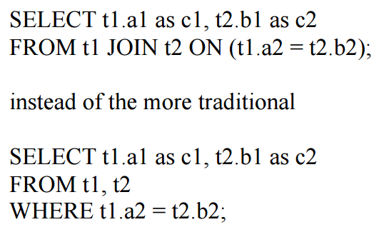
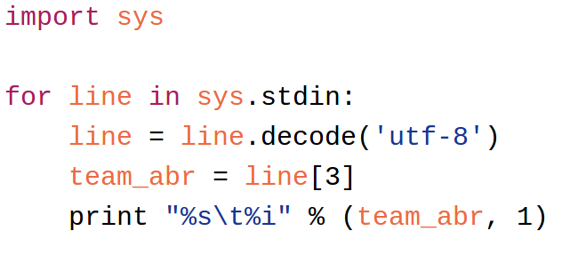
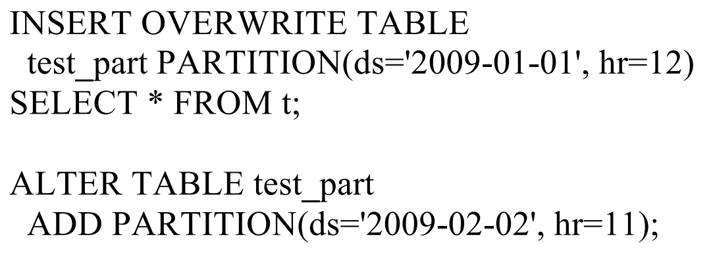
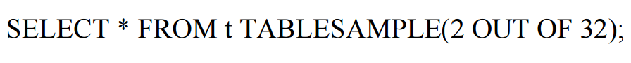
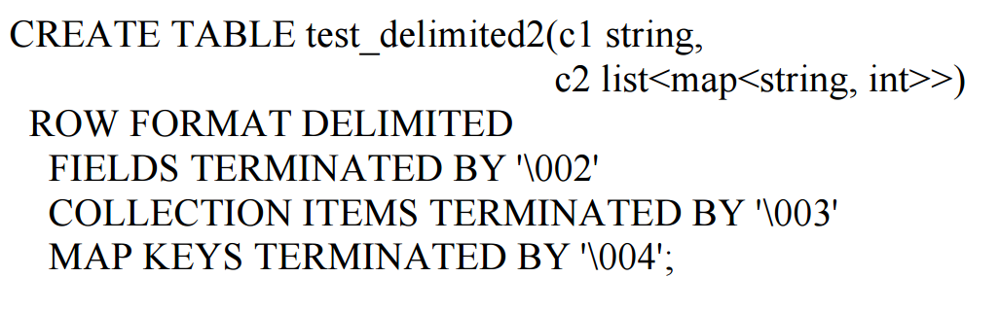
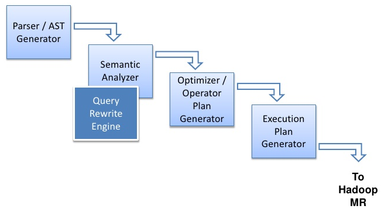

class: center, middle # Hive --- # Hive - A Petabyte Scale Data Warehouse Using Hadoop ### Authors: Ashish Thusoo, Joydeep Sen Sarma, Namit Jain, Zheng Shao, Prasad Chakka, Ning Zhang, Suresh Anthony, Hao Liu, Raghotham Murthy ### Presenter: Neil Seward --- # Contents 1. Defining Facebook's Problem 2. Contributions of Paper 3. HiveQL 4. HDFS 5. System Architecture 6. Demo 7. Conclusions --- # Defining Facebook's Problem - Facebook's data storage prior to 2008 was done on a trditional RDBMS - Their data was rapidly expanding and was already taking too long to perform menial queries. - Simple queries would take days to complete. ??? --- # Defining Facebook's Problem - Facebook started to investigate Hadoop MapReduce as a solution. - Allthough beneficial, the query time saved was lost in constructing queries in a MapReduce manor. - Many developers at Facebook took days to construct these simple queries. ??? --- # Defining Facebook's Problem - As a result, Facebook developed Hive. - Their objective was to create a scalable infrastructure that operated like a traditional RDBMS would. - Hive was to have columns, tables, and traditional SQL operation commands. ??? --- # Contributions - Hive offers traditional SQL queries and data management on a distributed MapReduce storage system. - Hive's custom serialization offers users the ability to store custom data types. - Hive's HDFS and the underlying architecture provide's a 20% decrease in runtime compared to traditional MapReduce architectures at the time. ??? --- # The Hive Model - Hive structures data into tables, columns, rows, and partitions. - The system supports many common datatypes: int, float, string, etc. - The system can also support complex and custom datatypes defined through serialization. ??? --- # HiveQL - HiveQL is a subset of SQl. - It contains extended operations that are useul in a distributed architecture. - Although it is a subset of SQL, there are some limitations. ??? --- # HiveQL - HiveQL can only support ANSI JOIN statements. <br>  ??? --- # HiveQL - HiveQL has support for using custom map and reduce scripts in queries. - This allows for more customization queries and additional operations like classification, clustering, etc. <br> <br>  ??? Note that Hive also supports clustering operations to reduce the load put on the reduce operations. Note that Hive supports the interchanging of FROM, SELECT, MAP, and REDUCE within a sub query. --- # HDFS - <b>Tables</b>: stored in directory. - <b>Partitions</b>: stored in subdirectory within table directory. - <b>Buckets</b>: stored as a file within a table or partition directory. --- # HDFS ### Tables - Tables can have many partitions, or operate without partitions. - Tables are partitioned with custom PARTITIONED BY functions. <br>  ??? Note that the first partition divides the table into a subset at the date and hour. The second partition does the same. --- # HDFS ### Partitions - Partitions can be used to select from tables. <br> <br> ??? Note that with partitions, the hdfs will only look at that partitions directory. With these partitions, pruning allows the file system to perform queries much faster. --- # HDFS ### Buckets - Buckets can be used to scan files within partitions or tables. <br> <br>  ??? Note that this queries the 2nd bucket file out of the 32 buckets in the table. --- # HDFS ### Serialization - HiveQL supports custom data types with serialization. - The default serialization is done through LazySerDe. --- # HDFS ### Serialization - SerDe serializes rows into objects. - In the table definition, HiveQL can specify row, column, list, and map value delimiters for serialization. <br> <br>  ??? Note that collection items are delimiters for the elements in a list. List items are rows in this case. Map keys are delimiters for items in a map. --- # System Architecture ### Summary The main building blocks of Hive are: <br> - Metastore - Driver - Compiler - HiveServer - Command Line Interface - Serialization Interfaces --- # System Architecture ### Metastore - Metastore stores location data and metadata on all tables, partitions, columns, etc. - This information is stored in a traditional RDBMS (MySQL) - There are often duplicate metastore servers in case one is terminated or is hung. ??? The info is stored in a RDBMS because the compiler needs this info quick. Without metastore, there is no structure for the data stored in HDFS. --- # System Architecture ### Query Compiler - The compiler takes in the HiveSQL queries and translates the queries into map and reduce tasks. <br> <br>  ??? - The compiler uses Antlr to generate syntax trees from queries. - The compiler will convert complex and nested queries into parent child relationship query block tree. - **** TODO ****